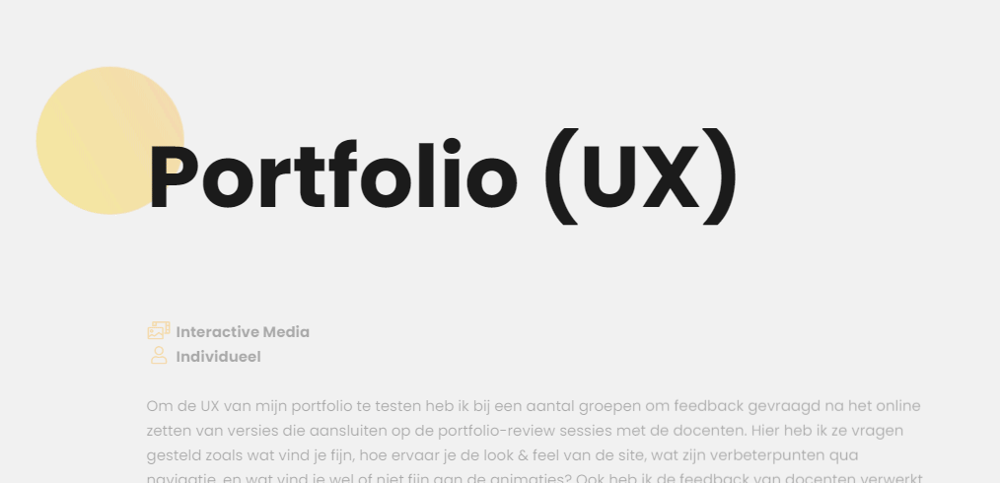
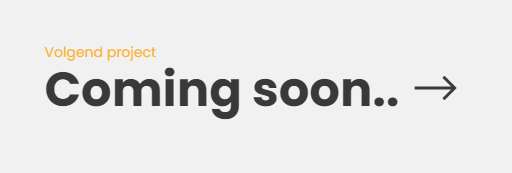

Portfolio (UX)
Interactive Media
Individueel
Om de UX van mijn portfolio te testen heb ik bij een aantal groepen om feedback gevraagd na het
online zetten van versies die aansluiten op de portfolio-review sessies met de docenten. Hier
heb ik ze vragen gesteld zoals wat vind je fijn, hoe ervaar je
de look & feel van de site, wat zijn verbeterpunten qua navigatie, en wat vind je wel of niet
fijn aan de animaties? Ook heb ik de feedback van docenten verwerkt die is aangegeven tijdens de
portfolio reviews.



Review 1 - 5/10/2020
Deze review bevat alle feedback die ik heb gekregen sinds het maken van dit portfolio. Inmiddels heb ik alle onderstaande feedback van review 1 die ik nuttig vond kunnen verwerken en toegepast op dit portfolio. In deze versie van mijn portfolio was het portfolio bijna compleet, echter miste er nog wat inhoud en waren er een aantal UX verbeteringen.
Semester 3 ICT & Media student
Deze student vind het portfolio er goed en mooi
uit zien. Qua navigatie zou hij breadcrumbs als toevoeging handig vinden. Ook zou hij projecten
van development ook daadwerkelijk werkend / uitvoerbaar maken en niet alleen de Github link te
gebruiken. De homepage zou iets meer flair kunnen hebben, deze is nog vrij leeg.
Een vriend zonder grafische achtergrond
Deze persoon vond de site duidelijk en
makkelijk te gebruiken. Verbeterpunten die hem opvielen waren de navigatie bij pagina's die naar
beneden kunnen scrollen, hier zou gebruik gemaakt kunnen worden van een achtergrond voor de
navigatiebalk om zo te voorkomen dat er overlappende tekst komt. Ook vond hij de cirkel die de
muis volgt afleidend.
Projectgroepsgenoten
Mijn groepsgenoten vonden mijn portfolio er goed uitzien.
De
animaties en algemene look & feel van het portfolio werden goed ontvangen. Als verbeterpunt
merkte een groepsegnoot op dat het niet direct duidelijk was waar de leeruitkomsten staan.
Docenten (Portfolio review 1)
De docenten waren erg positief over de eerste
versie van mijn portfolio. Ze vonden de looks en UX goed, echter mocht er nog wat meer inhoud op
komen. Verder kreeg ik als feedback om een extra navigatiesysteem toe te voegen in de vorm van
breadcrumbs voor betere UX. Als tip kreeg ik mee om na te denken over de JavaScript die ik nu
via een library gebruik, te vervangen door mijn eigen vanilla JavaScript. Ook vond een docent
het handig om een "volgend project" link toe te voegen onder bij elk project voor nog betere UX.
Review 2 - 9/11/2020
Deze review kwam nadat mijn portfolio al vrij gevorderd en uitgebreid was, en ook was er een redelijke hoeveelheid inhoud toegevoegd. Dit is ook de eerste review waar ik feedback heb gekregen van mijn portfolio-review groep. Omdat ik van andere personen feedback krijg, heb ik geen extra feedback meer gevraagd aan vrienden en projectgenoten.
Portfolio-review groep
In sprint 2 heb ik kennis gemaakt met mijn
portfolio-review groep waar ik en 2 anderen klasgenoten elkaars portfolio beoordelen en nuttige
feedback geven. Van deze studenten kreeg ik als feedback dat het er goed uitzag, ik wat extra
inhoud kon toevoegen bij bepaalde leeruitkomsten, en dat ik een logische opbouw van mijn
portfolio heb. Als tip kreeg ik nog mee om eventueel een visuele indicatie toe te voegen voor de
tijdsduur die ik per project heb besteed. Ook kreeg ik voor review 2 van een groepsgenoot de
feedback dat ik meer reflectie kon laten zien bij mijn projecten. Deze feedback vond ik zeer
behulpzaam en heb ik inmiddels verwerkt. Deze groepsgenoot vond dat ik deze feedback goed heb
verwerkt.
Docenten (Portfolio review 2)
De docenten waren erg tevreden over de voortgang
tussen review 1 en 2. Ik kreeg positieve feedback over het verwerken van de feedback van de
vorige review, en alle docenten gaven me als feedback dat ik goed bezig was en vooral kon
focussen
op de inhoud die nog niet aanwezig was van bepaalde projecten. Er was verder niks mis met de UX
van mijn portfolio en hier lieten ze me vrij in om nog eventuele aanpassingen te maken waar ik
dat zelf wil. Ik ben blij met deze feedback en de beoordeling die ik voor deze review heb
gekregen.
Wat heb ik geleerd?
Door constant feedback te krijgen leer ik steeds meer over wat een "normale" en handige UX is. Ook heb ik geleerd welke vragen ik het beste kan stellen om goede feedback te krijgen.
Wat kon beter?
Ook al kreeg ik goede en nuttige feedback, had ik al eerder meer feedback kunnen vragen aan docenten. Zo zou ik meer tijd hebben om feedback al vóór een review te verwerken.